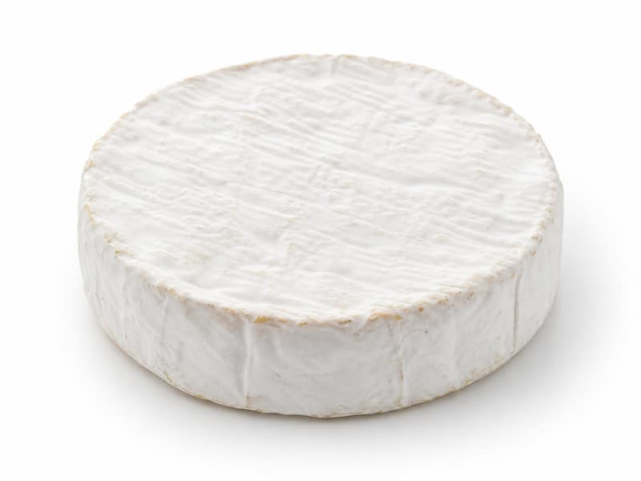

Nabiał i jaja
Ser Camembert
Ser Camembert to produkt z kategorii Nabiał i jaja. Na 100 g znajdziesz 21 g białka (proteinów), 290 kcal kalorii, 0.5 g węglowodanów oraz 23 g tłuszczu — idealne dane przy zdrowym odżywianiu, odchudzaniu lub budowie masy mięśniowej. Współczynnik ok. 13.8 kcal na 1 g białka pomaga porównać gęstość odżywczą. Pyszny francuski klasyk, uważać na tłuszcz.
Kalorie290 kcalna 100 g
Białko / proteiny21 g
Węglowodany0.5 g
Tłuszcz23 g
Cena (szac.)~4,83 złza 100 g
Ceny zaktualizowano: maj 2026 (szacunek — ceny w popularnych supermarketach)
Porcja: krążek (120g) — 25.2 g białka, 0.6 g węgli, 27.6 g tłuszczu (kalorie podane wyłącznie na 100 g). Cena porcji (szac.): ~5,79 zł.
Szczegółowe składniki odżywcze na 100 g
| Wartość energetyczna (kalorie) | 290 kcal |
|---|---|
| Białko (proteiny) | 21 g |
| Węglowodany | 0.5 g |
| Tłuszcz | 23 g |
| Tłuszcze nasycone | 14 g |
| Tłuszcze nienasycone | 9 g |
| Witaminy i minerały | Wapń, Witamina B2, Fosfor |
| Współczynnik kcal / 1 g białka | 13.8 |
| Cena produktu (szac. za 100 g) | ~4,83 zł |
| Cena za 100 g białka (szac.) | ~22,98 zł |